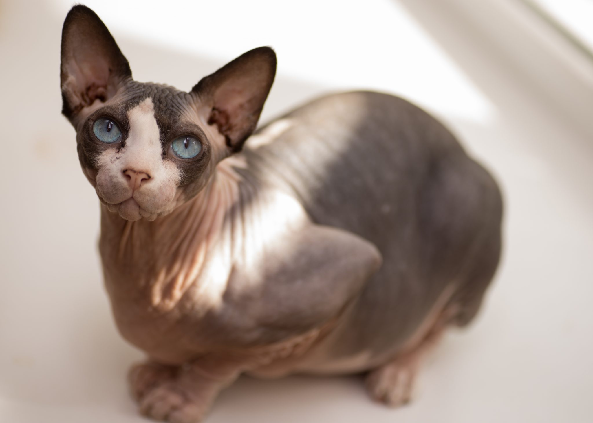

TODO: Transforme o texto "Voltar" abaixo em hiperlink que leva o usuário para a página com o sumário de todos os gatos
VoltarExótica e diferente, a raça Sphynx é a mais rara dos felinos. Também conhecido como Pelado Canadense, o gato desta raça possui o visual totalmente sem pelos!
